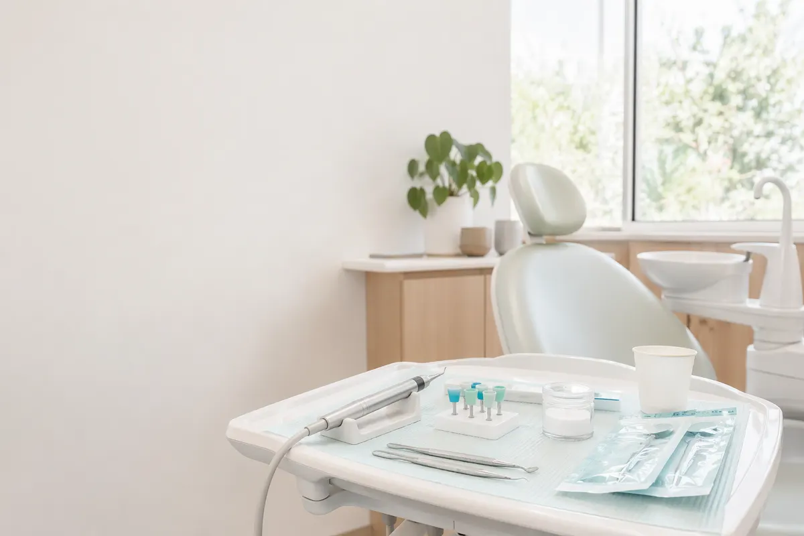
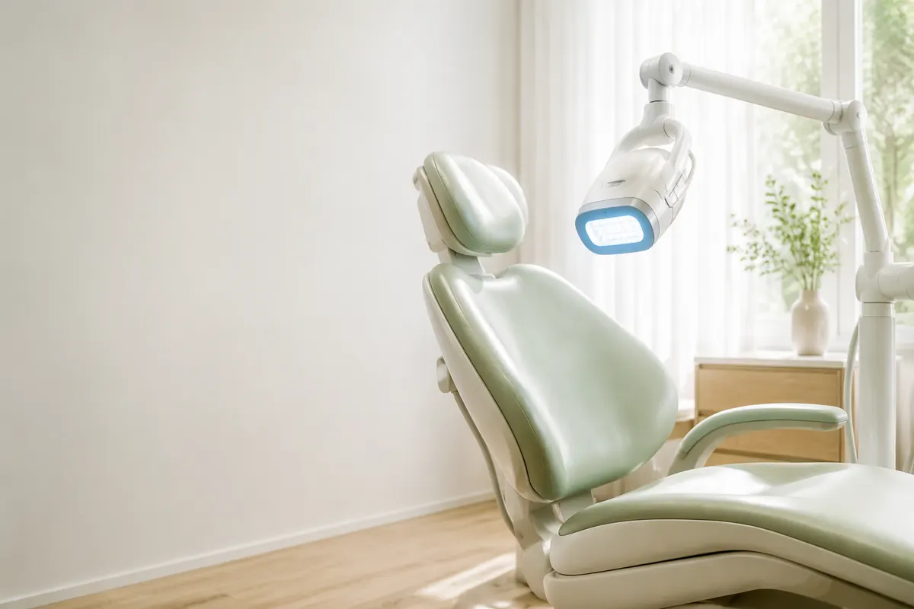
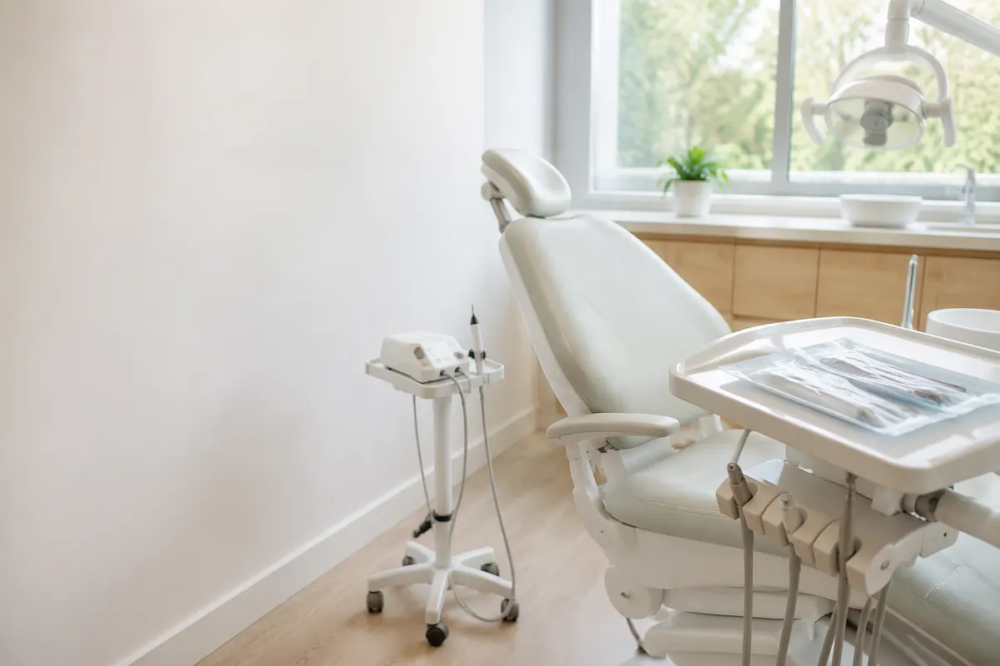
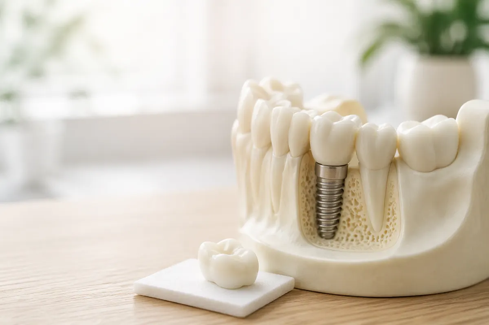
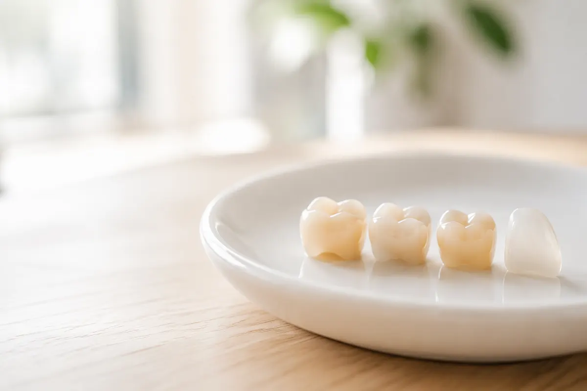
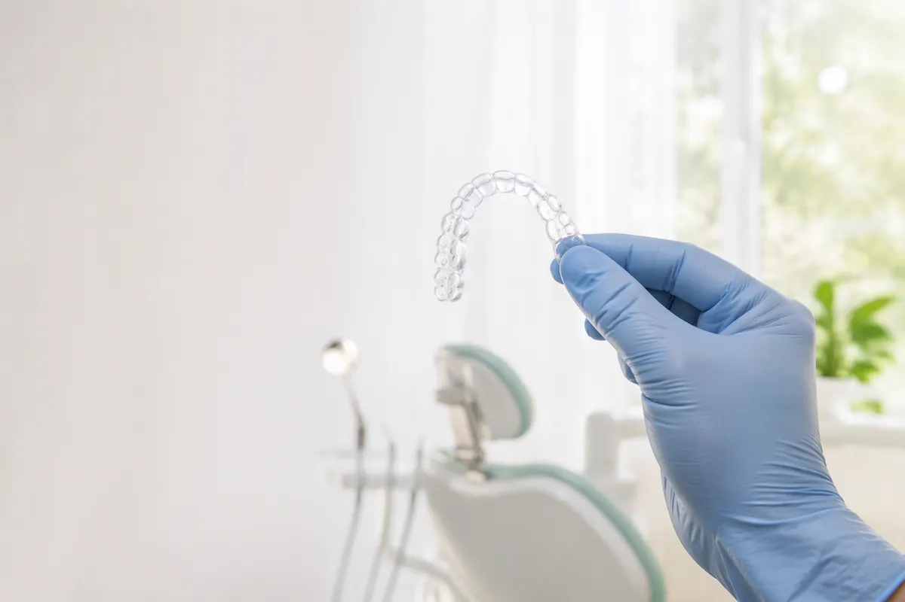
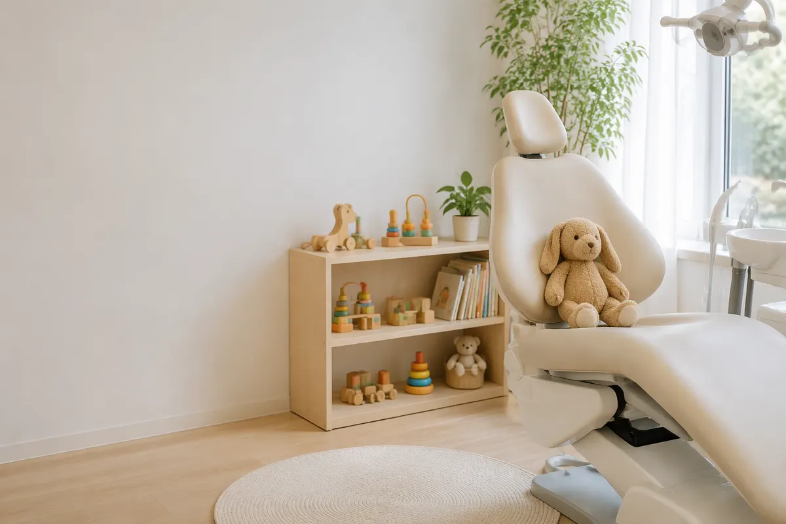

Лечим спокойно: от гигиены до имплантации
Взрослым и детям, в одном кабинете и у своего врача. По каждой услуге – письменный план и цена до начала лечения. Если не нашли свою ситуацию, начните с осмотра: врач посмотрит и напишет план по пунктам.

Профессиональная гигиена
Ультразвук снимает твёрдые отложения, порошок – пигмент с чая и кофе, полировка делает поверхность гладкой, чтобы налёт приставал медленнее. Один визит, около часа.
- Ультразвуковая чистка все зубы, включая труднодоступные
- Пескоструйная обработка пигмент с эмали
- Полировка и покрытие гладкая поверхность, рекомендации по уходу

Лечение кариеса и каналов
Сначала анестезия, потом – всё остальное. Работаем под микроскопом: видно больше, значит, сверлим меньше. Пломбу ставим за один визит, каналы лечим по письменному плану с ценой каждого этапа.
- Анестезия перед лечением всегда, без обсуждений
- Работа под микроскопом точность, меньше здоровых тканей в затрате
- Пломба за один визит полировка по прикусываемой поверхности
- Лечение каналов по плану два-три визита, цена каждого этапа записана

Отбеливание
Только после осмотра и гигиены: отбеливать больные зубы или зубы под налётом нельзя, это больно и бессмысленно. Сначала здоровье, потом цвет. Оттенок, который хотим получить, согласуем до начала.
- Осмотр и гигиена до процедуры убедимся, что отбеливать безопасно
- Защита дёсен изолирующий барьер, губы и дёсны закрыты
- Оттенок согласуем до начала смотрим шкалу вместе, решаете вы

Удаление зубов
Простое и сложное, включая зубы мудрости. Сначала снимок – он показывает, где проходят каналы и нервы. Анестезия, удаление, рекомендации письменно и контрольный осмотр.
- Снимок до удаления смотрим его вместе на экране
- Анестезия проверяем чувствительность перед началом
- Рекомендации письменно что делать вечером, что нельзя, когда прийти на осмотр
Ничего не начинаем без вашего решения
Это правило кабинета. Если в кресле нашли что-то ещё – останавливаемся, показываем и спрашиваем.
Имплантация
От снимка до коронки на импланте. КТ показывает, где есть кость и где её не хватает. Этапы, сроки и цена каждого этапа записаны в плане до начала – вы всегда знаете, что дальше и за сколько.
- КТ и план смотрим объём кости, обсуждаем варианты
- Установка импланта один визит, анестезия, рекомендации письменно
- Коронка на импланте срок изготовления в плане, обычно несколько месяцев после приживления

Коронки, виниры, мосты
Материал подбираем под зуб и бюджет: показываем варианты с ценами и объясняем разницу. Цвет согласуем до изготовления. На время изготовления ставим временную коронку, чтобы вы не ходили с обточенным зубом.
- Подготовка и слепок или скан – точность посадки
- Временная коронка сразу после обточки, на всё время изготовления
- Примерка и фиксация проверяем прикус и цвет вместе с вами

Брекеты и элайнеры
Консультация ортодонта, план по этапам и цена всего лечения – до установки. Обсудим, что подойдёт именно вам: иногда брекеты решают задачу быстрее, иногда элайнеры удобнее по режиму жизни.
- Консультация и диагностика снимки, фото, разбор ситуации
- План лечения с ценой сколько этапов, сколько визитов, за сколько
- Контрольные визиты регулировки и проверка движения зубов

Детская стоматология
Принимаем с четырёх лет. Первый визит ребёнка – знакомство с кабинетом: посидеть в кресле, посмотреть инструменты, пощёлкать кнопкой. Лечение – со второго визита и только с согласия ребёнка.
- Приём без спешки время на знакомство, а не только на лечение
- Лечение молочных зубов пломбы, серебрение, герметизация фиссур
- Родители рядом можно держать ребёнка за руку весь приём
Начните с осмотра
Врач посмотрит, объяснит и напишет план с ценой по пунктам. Решение – за вами, можно уйти просто с планом в руках.